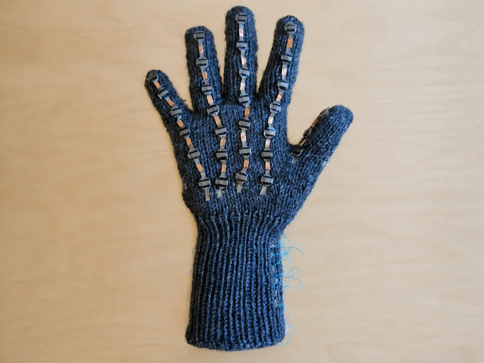
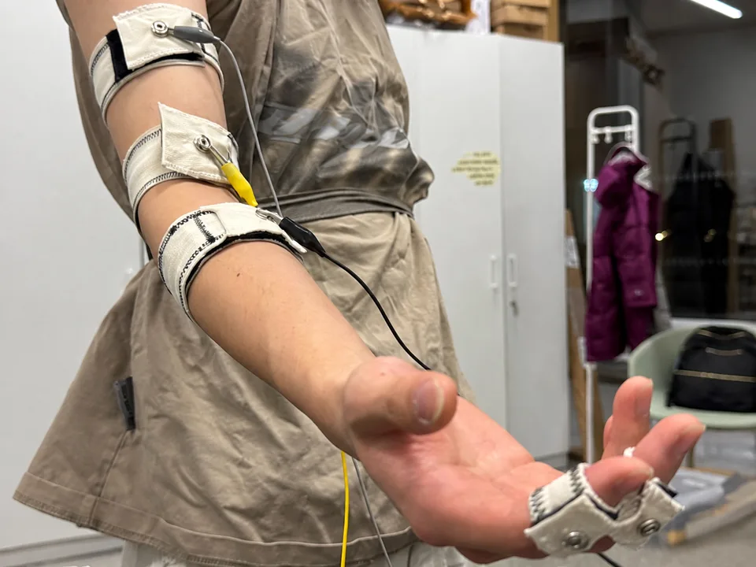
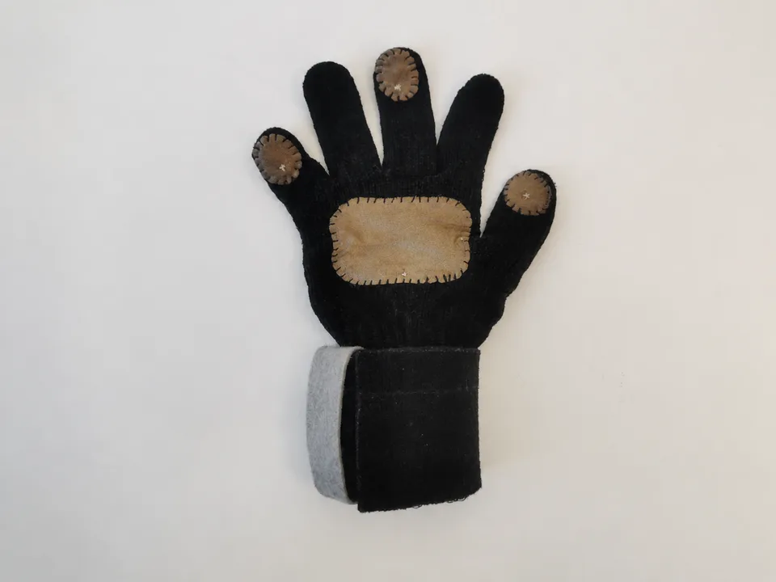
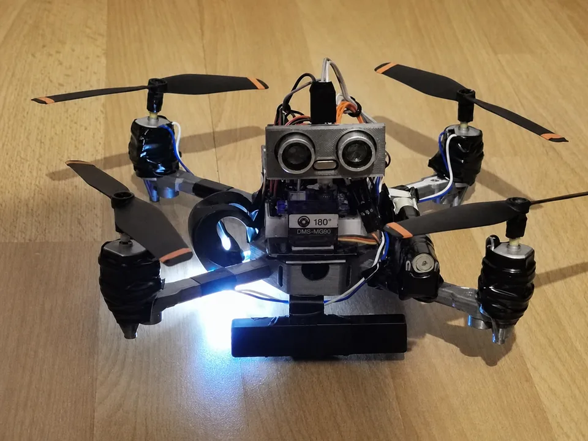
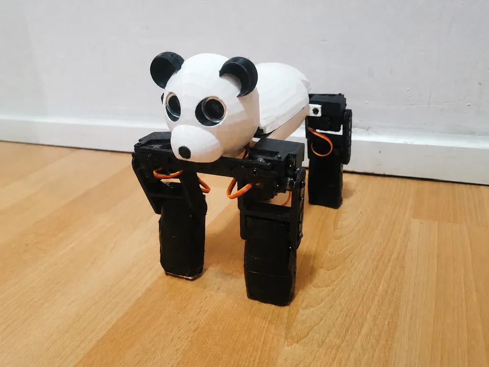
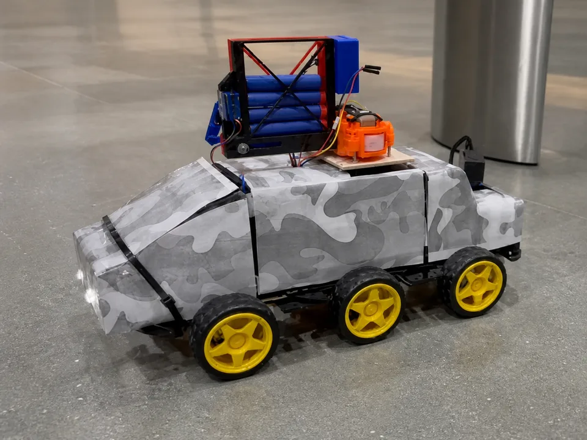

Vision–tactile sensing system
A 30-channel tactile glove, embedded acquisition network, synchronized visual–tactile dataset, and multimodal classification pipeline.
Publication in preparationProjects highlighting sensing hardware, embedded systems, intelligent interfaces, and multidisciplinary prototyping.

A 30-channel tactile glove, embedded acquisition network, synchronized visual–tactile dataset, and multimodal classification pipeline.
Publication in preparation
Led development of a smart garment using respiration, muscle activity, and skin-response sensing for an interactive wellbeing platform.
View project ↗
A textile smart glove for real-time gesture recognition and in-vehicle interaction, combining soft sensors, wireless communication, machine learning, and interface design.
View project ↗
Simulation and prototype work exploring drone coordination, object detection, monitoring, and response scenarios near critical infrastructure.
View project ↗
A voice-responsive interactive robot with speech recognition, ultrasonic sensing, servo actuation, embedded control, and 3D-printed components.

A remote-controlled six-wheeled vehicle integrating Bluetooth control, an IP camera, radar visualization, RGB indicators, and a custom 3D-printed launcher mechanism.